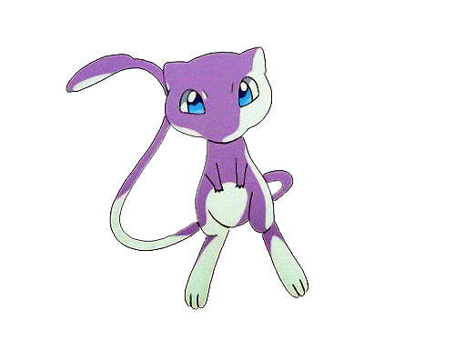
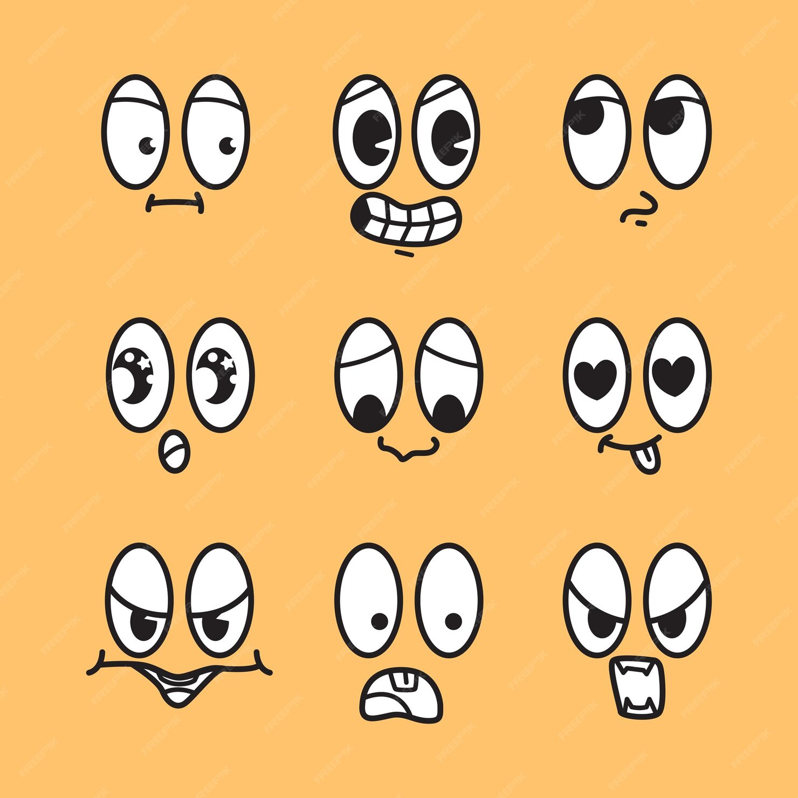
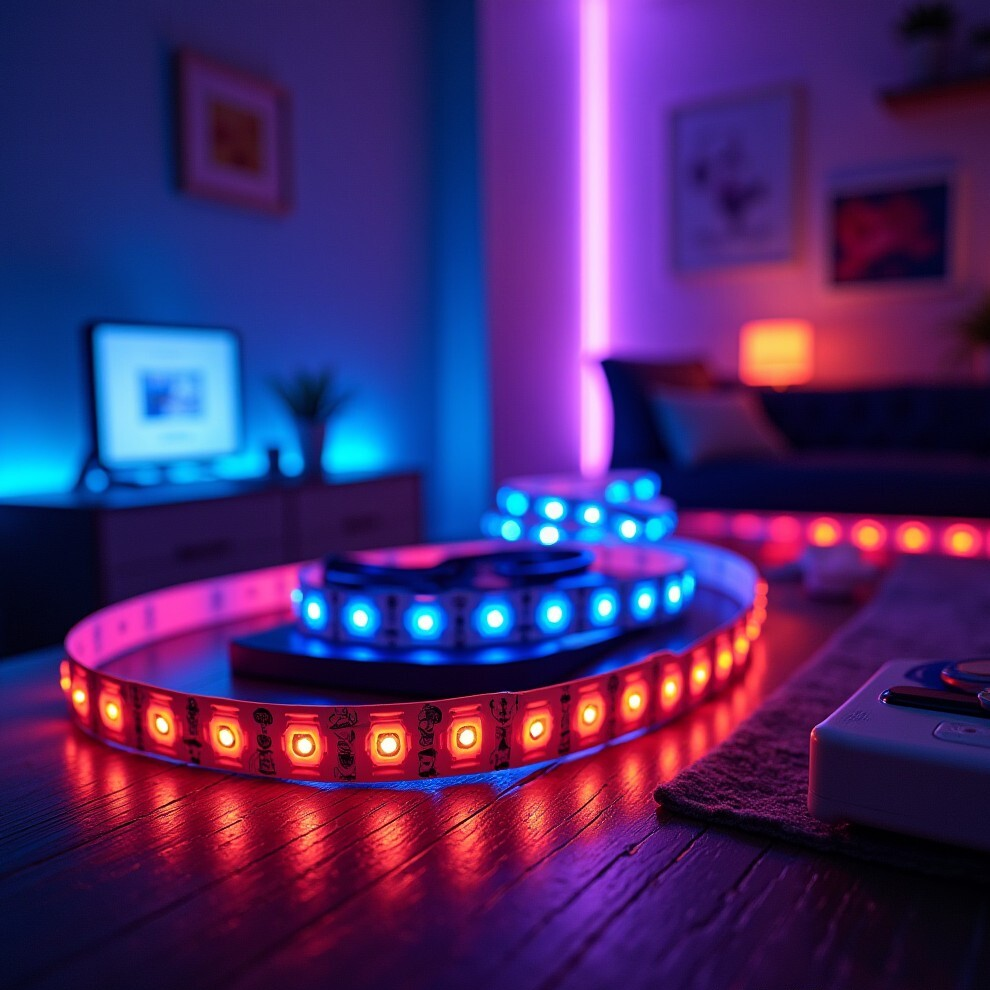

Antoni Climent
Welcome
Welcome to my personal web site!!! Here you can find various projects that I've been working on, as well as info about my career and some blog posts. This is a space where I share my passion for technology, neural networks, and creativity. Feel free to explore and connect with me!

About
Hi, I'm Toni. I'm passionate about technology, and I love training neural nets. They bring me hope for a more equitative and peaceful world. I let here some information about my career.
2023-2024
I did my masters at
VIU, where I finished making a thesis to compare and improve fine
tuning techniques for LLMs, aplied to social media toxicity
detection.
2021-2024
I am currently working at
Leitat Technological Center
within the AI team. We are working on projects of all kinds, from
computer vision to NLP and forecasting.
2016-2020
I studied at Universitat Politècnica de Catalunya (UPC), and
published a paper titled
"Applying and Verifying an Explainability Method Based on
Policy Graphs in the Context of Reinforcement Learning", within a research group called
HPAI.
Projects
LLM Calculator
Llm_calculator
is a project that uses local llm zephyr to extract the
information required for a basic operation (such as sum or
multiply) from a prompt, to later perform the operation and
returns the result to the user.

EmotionRecognition
In
EmotionRecognition
I trained an image classifier to recognize the emotion that a
person's face is showing. The inference is performed in
real-time using the webcam.

RoomLeds
RoomLeds
is a project that implements several light patterns to be
executed in a led strip, and allows you to controll it via a
infrared remote controller.
Contact me